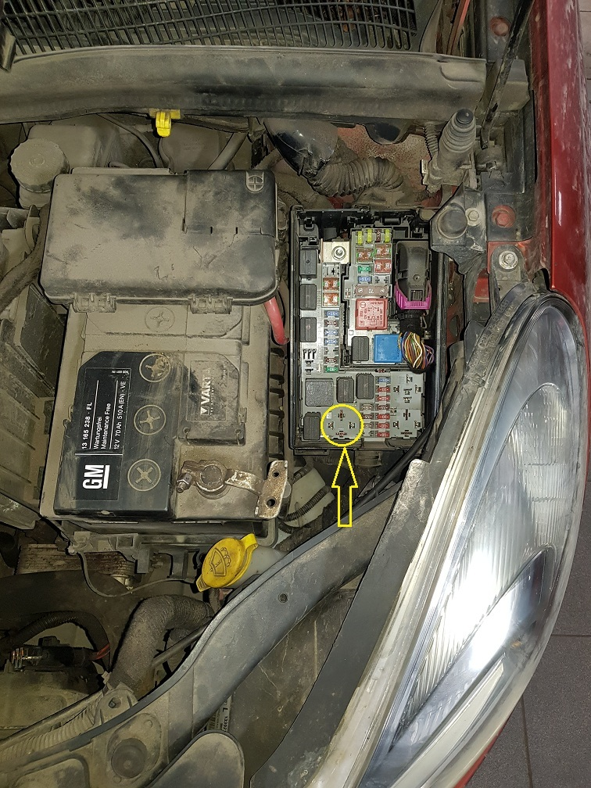
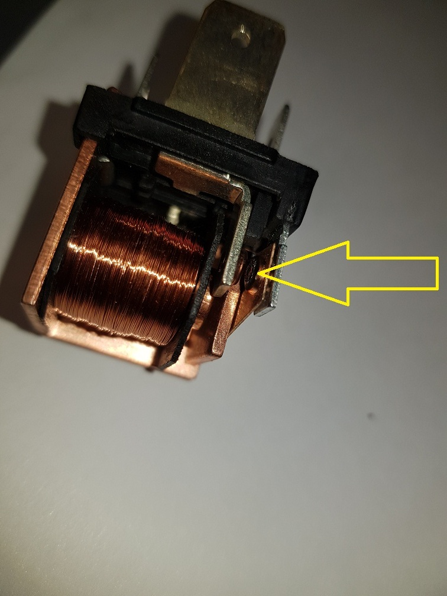
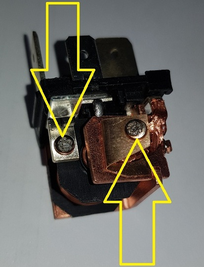
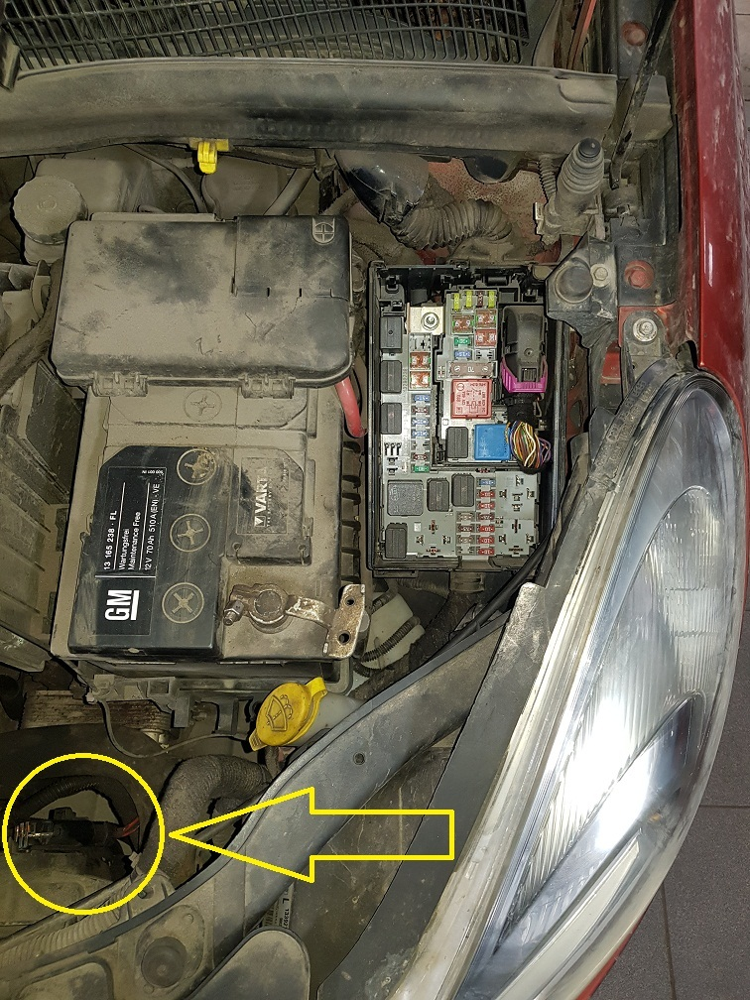

23.03.2019
К нам обратился клиент а/м OPEL CORSA D с проблемой : постоянно работает вентилятор охлаждения радиатора.

Неисправность быстро была обнаружена ! В блоке предохранителей двигательного пространства включилось и залипло во включенном положении реле максимальной скорости вентилятора радиатора.



Реле , естественно , подлежит замене ! Часто в автосервисах на этом ремонт и заканчивается , но не в нашем случае ! Есть смысл задуматься о причине выхода из строя реле .
И так в процессе диагностики было выявлено , что реле средней скорости вентилятора тоже имеет эдентичную "болячку" , что и реле максимальной скорости . Более того , на средней и малой скорости вентилятор радиатора не работает ... Причина отсутствия малой и средней скорости вращения вентилятора , это сгоревший резистор вентилятора , который установлен на дифузоре вентилятора .

Все перечисленные неисправности могли возникнуть в случае большой силы тока потребляемой эл. двигателем вентилятора или долгой постоянной работой сломавшихся деталей. В итоге следствия ( тернист и труден путь диагноста ) было установлено , что поздно открывается термостат системы охлаждения двигателя ( 110 С` ) из-за которого постоянно работал вентилятор радиатора .
ИТОГ : Неистравность - термостат , следствие - резистор вентилятора радиатора и два реле вентилятора радиатора.